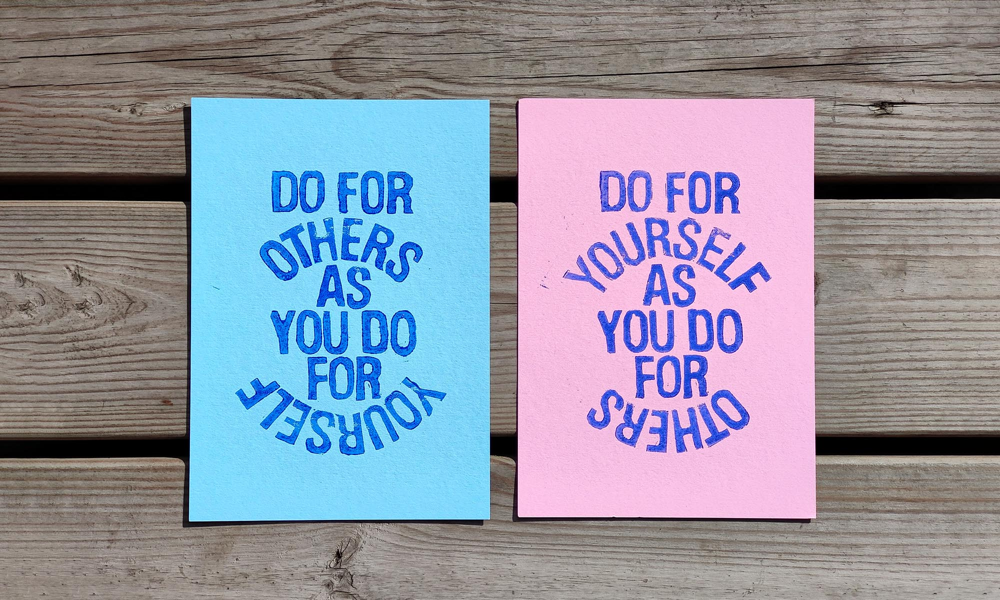
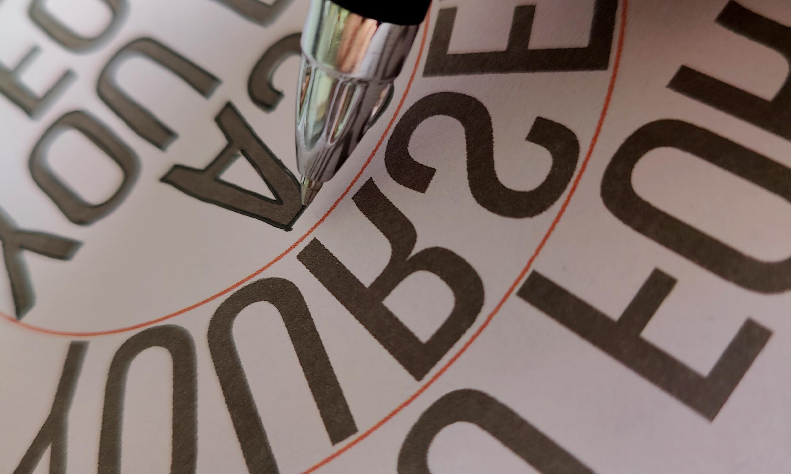
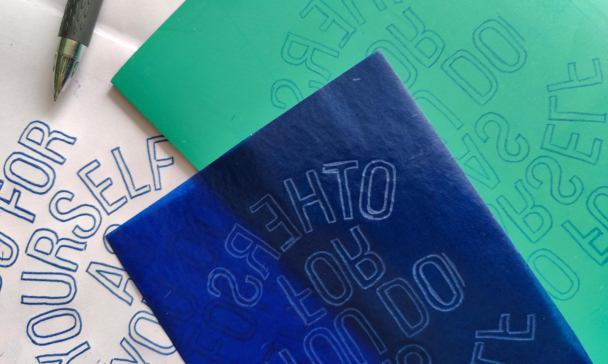
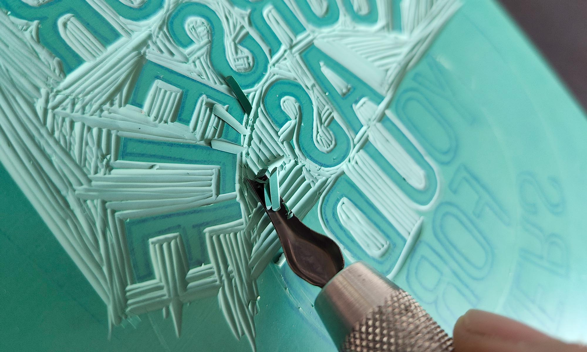
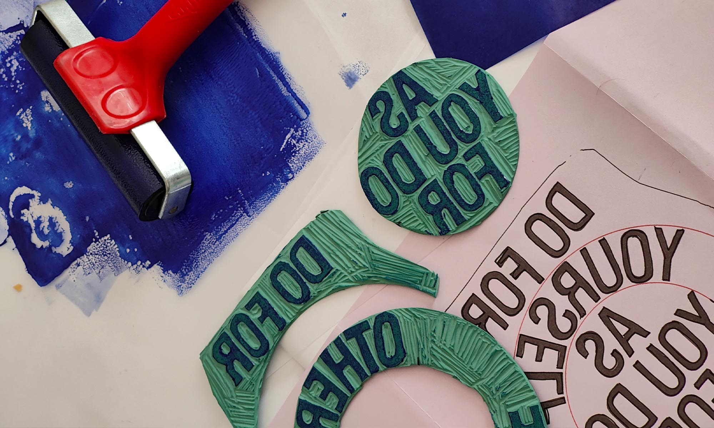
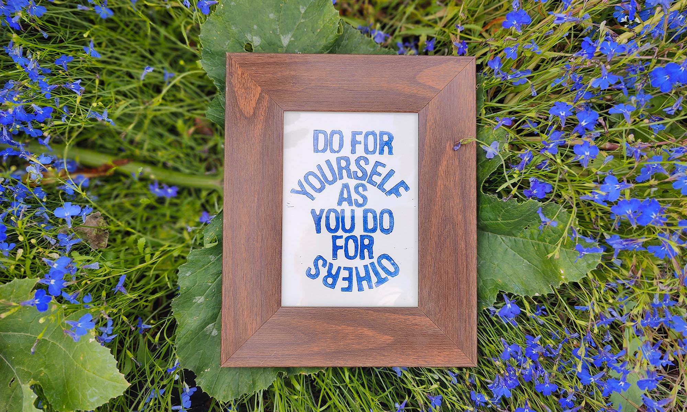

This is an extremely personal project in that it's a direct output of the work I've been doing for the past year with my therapist. "But what's anyone doing for you?" is the recurring question I'm consistently challenged with as I speak through my thoughts, my fears, my struggles, my neurosis, my past, and my everyday everythings. This isn't to say nobody does anything for me, they do. Lots of people do lots of things for me. I can't explain to you a years worth of counselling, but themes are themes, and this was one of mine.


I've come to accept that a lot of my own mental ill health stems from a self-inflicted neglect of my own needs. A cyclical and prolonged lack of self respect has led to an increased level of self-loathing manifesting in a strong and unshiftable belief that I don't matter and that I am not deserving of anyone's time, respect, or good will.


The other side of this is that if I do try to focus on myself, I will inevitably turn it into something for others. Even this project, which was initially planned as something for me, turned into... well, this.
I chose to do these posters as lino prints for a couple of reasons. Firstly, it's a very time-consuming process and, since I wanted to gift a lot of these prints to others, I felt it would be more appreciated as something that was so handmade. Secondly, with the other side of the project about doing something for yourself, I wanted to create it in a way that was as challenging as it was rewarding - and lino cutting is a very therapeutic, almost meditative, practice which brought me a lot of pleasure to do.
A reminder to be kind to yourself as well as to those around you. We're all fighting our own battles and sometimes a little kindness can go a long way towards making life that wee bit easier. pic.twitter.com/gwbkYTWb2d
— Andrew Nicolson (@drewnotweird) August 22, 2022
